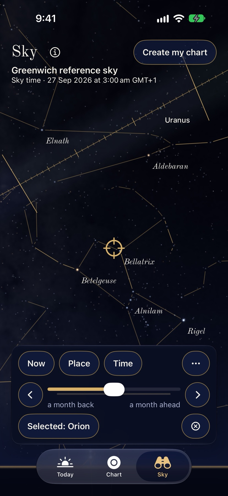
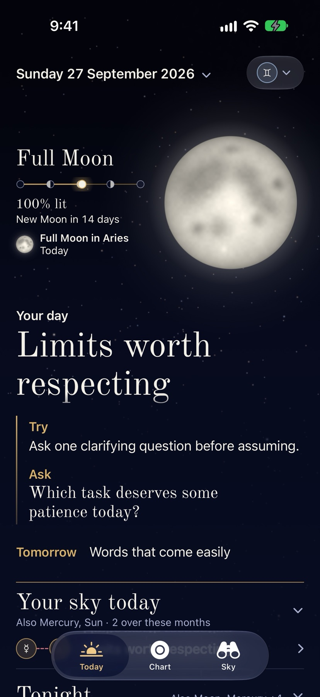
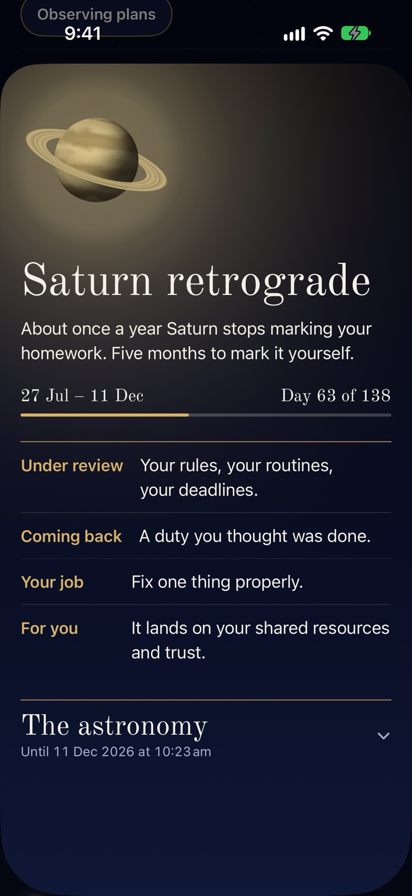
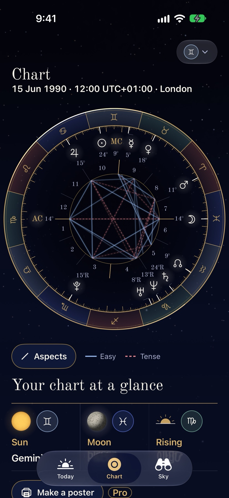

For iPhone · Download on the App Store
The real sky, and the sky you were born under.
Arrival Sky shows the stars, the Moon and the planets as they are right now, from where you stand. Find what you're looking at, plan a night out, then turn the sky back to the moment you were born.




Your day at a glance
Each morning, a short brief from the day's real positions against your chart: one headline, something small to try and a question to sit with, plus tonight's brightest planet and the next sky event. Turn on the morning brief and it arrives as a notification, composed on your iPhone.
Retrogrades, Moons and eclipses
Every sky event gets its own card: Mercury, Venus and Mars retrogrades from start to finish, with how far through you are, plus new and full Moons, sign changes and eclipses.
You and someone else
Add a friend to see their day and their chart, and compare the two of you as friends or as partners: what comes easily and what takes work, in words, with no score and no forecast.
Find what you're looking at
Search the planets, 30 named stars and all 88 constellations. The app tells you which way to face and how high to look. Tonight lists what's up and when it rises and sets, and eclipses show what you'll see from your place.
Plan a night out
Save a time and place to observe, with a reminder if you want one. The Sun is never something to look at: the app links NASA's safety guidance and never says when it's safe to remove protection.
Your chart, computed carefully
Positions come from an open-source astronomy engine checked against reference charts to within an arcminute. Unknown birth time? The app says what it can't know rather than guessing.
A private journal
Write down what the day brought and keep the readings you want to come back to. Readings are astrology, offered for reflection, not predictions or advice.
Private by design
No account, no ads, no analytics. Your details stay on your iPhone, and you can delete everything in one step. Place search uses Apple Maps. Privacy policy.
Free, with an optional Pro
Pay once. No subscription, no account. The sky, search, Tonight, eclipses, observing plans and their reminders, today's brief and reading, this month of Your year, your chart, the journal, saved readings and the Moon widget are free, and so are one friend and a comparison's headline, summaries and what comes easily. Pro is one purchase that adds readings for other days with week and month views, the whole of Your year, the Your day widget, more friends, compatibility in full, your day together, keeping the days that matter to you both, chart posters, and more app icons and wheel styles. It can be shared with your family.
More apps by Colin Sergay
Japa: a mala, rosary and tasbih counter for iPhone, iPad and Apple Watch, with the words of your mantra or prayer in view.
Lamp & Line: the complete Berean Standard Bible, free and offline, with a Psalm, a reading and a prayer each day on iPhone, iPad and Apple Watch.
Vialog: a private injection tracker for iPhone, with your schedule, records, site log, reminders and notes.
Sipworthy: a private coffee journal for iPhone and iPad, to rate café coffees, dial in your beans at home and find the cups worth drinking again.
TrueRate: take-home pay after tax, GST and super for Australian contractors on iPhone, and whether a contract is worth taking.
Dawn: Australian weather explained for your day, on iPhone and Apple Watch.
Tally: sales, downloads, analytics and reviews for all your App Store apps at a glance, on iPhone, iPad and Mac.
Dusk: dark mode for every website in Safari on iPhone, iPad and Mac, in colors that look designed, not inverted.
ElfClean: a Mac cleaner for people who build with AI, finding the space AI tools, models, old node_modules and Xcode left behind.